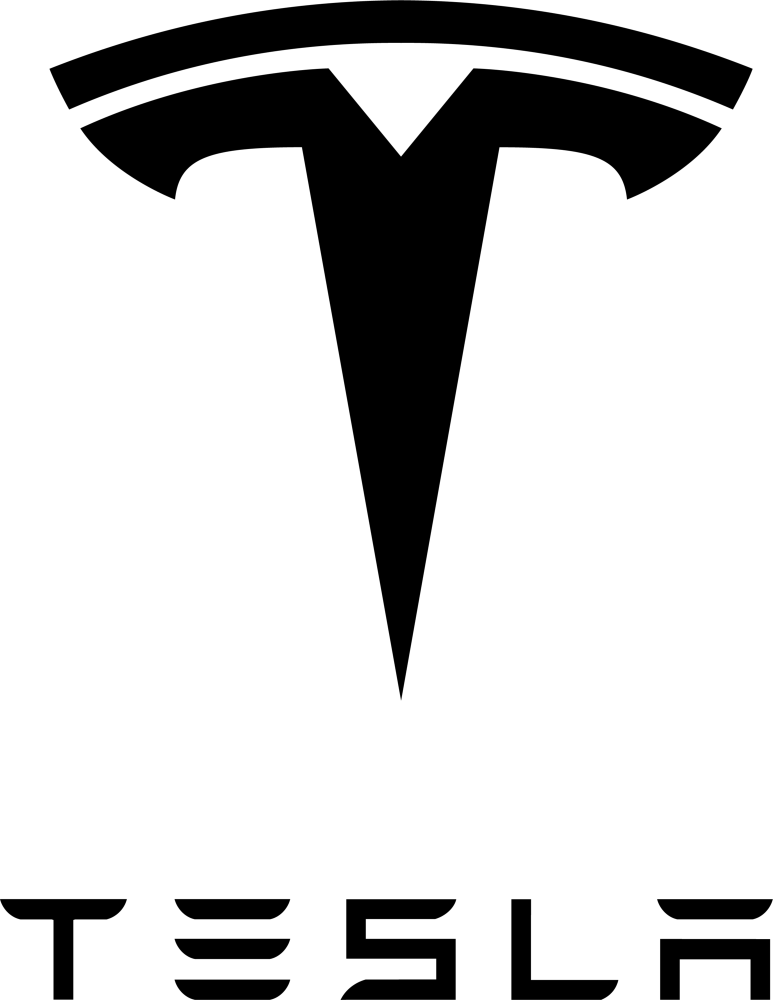
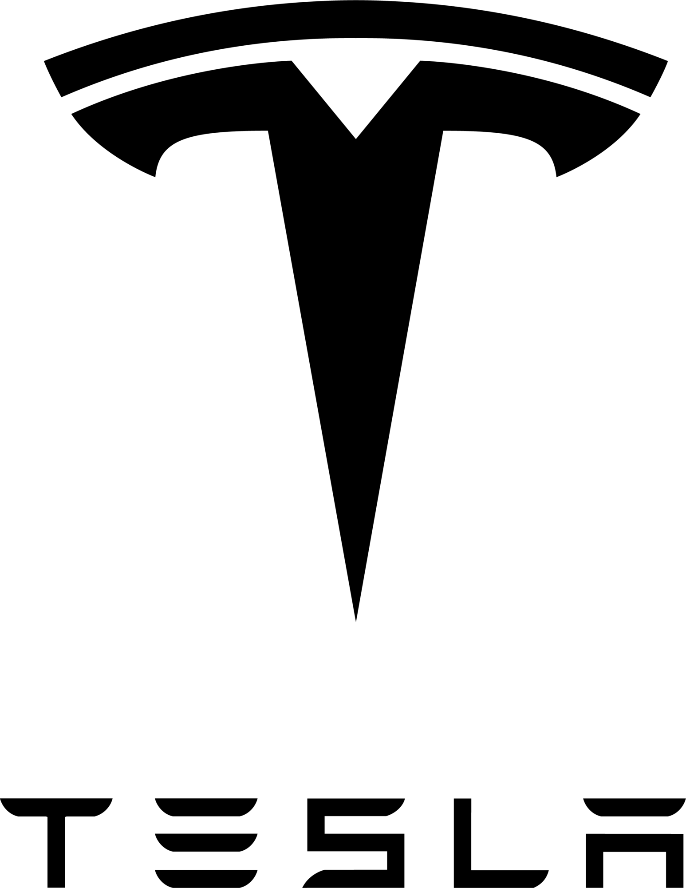

Strategic Communications & Negotiation Consulting
The Meaning Behind "co&co"
Co evokes mutuality—two parties partnering with purpose, integrity, and clarity. It stands for collaboration; connection; co-creation; commitment.
co&co believes in powerful partnerships: between you and your advisor, between you and the companies you're engaging– and between you and yourself.
Our name reflects the spirit of mutual investment—a give-give relationship designed to unlock your highest potential; specifically in the context of negotiation advocacy.
Nicole is a UC Berkeley alum and founder of co&co, a career consultancy supporting tech professionals at turning points in their careers. She has guided over 500 professionals through successful offers and career decisions at places like Google Brain, OpenAI, Meta FAIR, and DeepMind, returning $200M back into the pockets of candidates.
"Nicole read the situation perfectly. She had a keen eye for what was possible, aimed high, and won me a huge increase - one that I never would have dreamed was attainable (let alone asked for) if I'd been negotiating on my own."
Isaac Rabbani, Data Analytics @ Vanguard, University of Pennsylvania PhD in Economics
It felt like I was playing a month-long chess game with a Grandmaster in my corner whispering moves into my ear. You can quickly tell how experienced Nicole is at this game...This not only significantly increases your present-day income but also all future income as well as how you perceive your individual value. Truly transformative!
David Bellamy, Founding AI Researcher @ Lila Sciences, Harvard PhD in Epidemiology
Working with [Nicole] has been transformative. Under her guidance, I achieved feats I never thought possible...Her wealth of experience pushed me beyond my comfort zone, leading to significant personal growth.
Reynaldo Morillo, AI Researcher @ MIT Lincoln Lab, University of Connecticut PhD in Computer Science
400+ companies navigated
From pre-seed to FAANG, our clients have negotiated offers across the most competitive teams in tech.


 

Frequently Asked Questions
What services do you offer?
We help top talent navigate career transitions—from identifying the right roles to negotiating the offer and growing once you're in.
This includes:
• Offer negotiation strategy
• Career clarity + targeting
• Resume, narrative, and outreach support
• On-the-job advising for promotions or pivots
We specialize in technical, research, and mission-driven roles, especially in AI, engineering, product, and academia-to-industry transitions.
When is the right time to engage co&co for offer negotiation?
It is critical to your maximized negotiation ability to have multiple offers, which means creating competition for your candidacy. That starts at the job search stage. Sometimes, engagement at the offer stage is too late for me to have full impact.
Will you help me get interviews/offers?
I don’t function as a recruiter—but I do help clients refine their positioning, improve their outreach, and get in front of the right decision-makers through high-trust introductions where possible. I have many contacts in industry.
How much will my offer change?
The average increase my clients see is 41%, but it depends on a multitude of factors.
What is the likelihood I lose an offer from negotiaing?
In my personal experience, it has happened <.1% of the time. I assess signals and lead clients through exercises that not only de-risk negotiations, but build relationships through them.
What is your pricing structure?
co&co operates on a retainer + success fee model based on the increases in a negotiation – and, if you’re satisfied. No increase? No fee. Specifics will be gone over in a live call.
Can't I just do this myself?
You can. And a lot of people do.
But most people don’t know what’s actually possible. They underestimate their value, leave money on the table, and say yes to roles that don’t serve them—just to avoid a hard conversation.
Smarter negotiating can mean hundreds of thousands—sometimes millions—over the course of a career. Compound that across decades, and the right decision at the right moment has a 10x return.